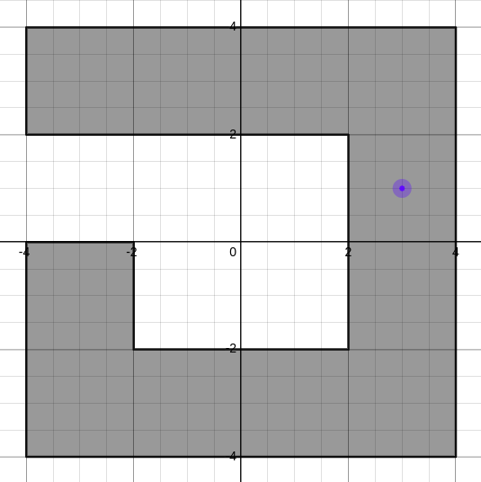

The point-in-polygon is a standard computational geometry problem that asks whether a given point lies within some polygon.
Desmos Link

A simple technique is to shoot a ray from the point and count the number of intersections between the ray and the polygon's edges. If the point is within the polygon, the number of intersections should be odd; otherwise, the number of intersections should be even.
We have a common elementary algorithm to determine whether a point is in a polygon, so long as we do not care about issues of numerical precision.
The point in the graph can be dragged, and its color changes depending on whether it is inside or outside the polygon.